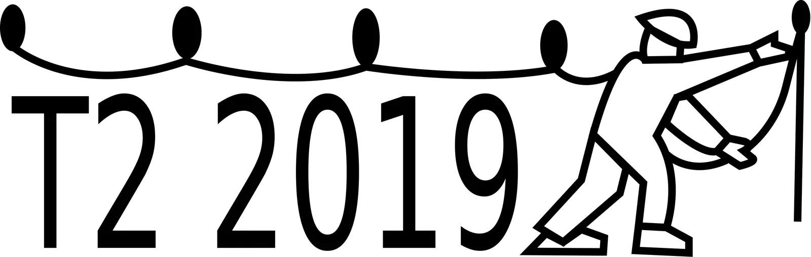

T2 - ili kako to Mađari rade
Naša vrijedna arhivarka Marina posjetila je bratsku i prijateljsku nam mađarsku speleološku zajednicu i tamo postala prva Hrvatica koja je završila T2 seminar

Ove godine na poziv dragih prijatelja iz Mađarske dobila sam jedinstvenu priliku da postanem prva Hrvatica koja je završila T2 seminar (Technical Level 2) u sklopu mađarskog sustava speleološke edukacije. Prije odlaska na seminar mislila sam da ću imati ulogu promatrača, najviše zbog jezične barijere, međutim dogodilo se upravo suprotno. Bila sam ravnopravni polaznik ovog seminara. Domaćini su se potrudili uvijek budem u pratnji instruktora koji govore engleski, kao i polaznica iz SAD-a, da posjetim njihove najljepše jame te u konačnosti da se ne osjećam zapostavljeno, pa su u mojoj blizini uvijek govorili engleski. Za gostoprimstvo skidam kapu!
[caption id="attachment_2618" align="alignnone" width="3083"] Tehnical level 2 seminar[/caption]Za početak bi pojasnila mađarski sistem speleološke edukacije. Početnički stupanj više-manje jednak je našoj speleoškoli, osim što traje 6 mjeseci. Nakon godinu dana može se pristupiti T1 (Technical Level 1) ispitu organiziranom na razini svakog kluba, a koji se sastoji od testiranja različitih vještina kretanja po užetu (primjerice prolaženje „zeznutih“ linija), slaganja 3:1 sistema tj. Sv. Bernarda i demonstracije jedne tehnike samospašavanja (za razliku od nas, njihova osnovna tehnika samospašavanja nije tehnika duga pupčana- krol već „direct haul“, o kojoj ću pisati nešto kasnije). Nakon toga slijedi T2 seminar na razini krovne organizacije u trajanju od 9 dana koji je tema ovog članka, a obuhvaća opremanje, sastavljanje različitih varijanti Sv. Bernarda i tehnike samospašavanja. T2 ispit je pak puno kompleksniji i može mu se pristupiti 4 mjeseca nakon seminara. Nakon položenog T2 ispita slijede iduće dvije stepenice: „Trip Leader“ s kojim dobivaju dozvolu za posjete jamama i „Expedition Leader“ na kojem se detaljno dotiču geologije, istraživanja i nekih regulatornih pitanja te dobivaju dozvolu za istraživanje jama u Mađarskoj.
T2 Seminar je održan u mjestu Szögliget, u Nacionalnom parku Aggtelek na sjeveroistoku Mađarske. Ovo mjesto je svojevrsna meka za mađarske speleologe jer se sastoji od mnoštva speleoloških objekta koji su zbog svojih geoloških i geomorfoloških posebnosti svrstani na popis UNESCO-ove Svjetske baštine. Obzirom da sam opremala nekoliko takvih jama, mogu samo reći da za takav stupanj zaštite postoje i objektivni razlozi, jame su zaista veličanstvene. Tijekom seminara vladao je visok stupanj reda i discipline. Raspored je bio stisnut: polazak na teren u 8 ujutro, povratak kasno popodne, pranje opreme, sastanak (na kojem se radi kratka evaluacija i planovi za idući dan), izrada nacrta (tzv. rigging sketch ) i spremanje opreme za idući dan. Vremena za vježbanje nije bilo mnogo pa su mnogi polaznici to odrađivali u sitnim noćnim satima. Moram priznati da su moje ruke, u većini takvih situacija, radije hvatale neko hladno piće nego uže 😊. Bez obzira na disciplinu, imali smo i pokoji lakši dan u kojem je bilo vremena za zabavu i „szüttyögés“ (fjaka), sve u svemu baš po mojoj mjeri.
Seminar je bio podijeljen u dva dijela. Prvi dio sastojao se predavanja na engleskom (jedan dan) i tri dana postavljanja na stijeni ili u jami. Prva jama koju sam opremala bila je u Slovačkoj - Nagy Bikkfa (-120m) s prelijepim saljevom i jezercem na dnu, a druga Fekete (Black Cave), još jedna predivna jama, sva u dolomitu. Svaki polaznik imao je svoju bilježnicu u kojoj su crnim poljima označeni uvjeti koji se moraju zadovoljiti u prva četiri dana kako bi se moglo nastaviti sa seminarom. Pod zadovoljiti smatra se napraviti samostalno pred instruktorom u razumnom vremenskom roku. Posebno se inzistiralo na higijeni uzlova. Primjerice, bilo je potrebno svezati osmicu tako da su iz prve sve niti lijepo poredane, da je nit koja će se opteretiti s gornje strane te da je uška veličine taman da jedva stane karabiner.
Drugi dio seminara sastojao se od jednog dana na poligonu i još dva dana postavljanja. Na poligonu su se radile i neke dodatne tehnike, poput španjolske metode povlačenja unesrećenog do sidrišta, ako visi na nevezanom kraju užeta. Naravno da nisam upamtila dalje od prva tri koraka i ne vjerujem da bih ikada upotrijebila tu tehniku u realnoj situaciji čak i da ju uvježbam, ali svakako bi se time jednom poigrala na Žici, eto iz zabave. Također, naučili smo nekoliko varijanti izrade tirolske prečnice, spitali i bušili i ono meni najzanimljivije testirali smo različita užeta, uzlove i krol pri faktoru pada 1. Drago mi je bilo uvjeriti se da oprema koju koristim uistinu čuva, međutim isto tako mislim da će se moja razina opreznosti ipak malo dodatno povećati kada se idući put nađem npr. na drugoj ili trećoj etaži Kite…
[caption id="attachment_2628" align="alignnone" width="1040"] Testiranje Crolla[/caption]U drugom dijelu seminara opremila sam još dvije jame. Jedna je Vecsembükki (-236 m), treća najdublja jama u Mađarskoj s predivnim velikim ulazom prekrivenim zelenilom koji pri izlazu stvara poseban doživljaj. Također opremala sam prečku u Almási zsomboly (Apple cave, -100m) koja se nalazi 5 m od granice sa Slovačkom (kada si u jami, zapravo si u Slovačkoj). Obzirom da smo imali dovoljno vremena, omogućili su mi da opremim i donje dijelove jame i tako vidim najljepši dio jame- dugački svjetlucavi saljev koju uistinu ostavlja bez daha. Što se tiče samog opremanja, ne bih rekla da se njihovi principi značajnije razlikuju od naših. Interesantno je možda to da imaju pojam jednostrukog sidrišta koje je dovoljno jako da se smatra dvostrukim. Primjerice, ako se za prvo sidrište uzme debelo zdravo drvo, tada ga nikad ne povezuju u dvije točke i uvijek navezuju uže direktno na drvo. Koriste jednostavni i efikasni sistem određivanja duljine šlinge prilikom postavljanja odnosno mjesta gdje će se napraviti uzao. Duljine šlinga su jedna od stvari s kojima sam se mučila u mom skromnom iskustvu s opremanjem. Zanimljivo je i da svi Mađari imaju istu duljinu kratkog pupka (43 cm), jer duljina kratkog pupka, nema nikakve veze s veličinom čovjeka. Tijekom seminara radili smo različite varijante Sv. Bernarda i korištenjem različitih pomagala, od različitih tipova kolotura, do slaganja sistema s onim što imaš na svom pojasu. U konačnosti morali smo znati složiti sistem na napetom užetu s uzlom, preći uzao, zatim prebaciti na sistem za spuštanje i opet proći uzao. Inače, jedna od stavki za T2 ispit je upravo ovo što sam opisala, uz izuzetak što se sve to mora složiti dok se visi u vertikali. Posebno me se dojmilo kako su dobro pojasnili način izračunavanja postotka težine koju podižeš ovisno o tome koristiš li karabiner ili neku od kolotura te gdje je bolje pozicionirati učinkovitije pomagalo.
Tehnike samospašavanja razlikuju se od naših. Ne mnogo, ali neke sitne razlike dosta utječu na efikasnost provođenja same tehnike. Istakla bi možda dvije razlike koje vrijede za većinu tehnika. Prva je ta da oni nikad ne ukopčavaju svoj kratki pupak centralni karabiner unesrećenog već uvijek u dodatni karabiner, što ima svojih prednosti, ali i mana. Druga je ta da nikada ne ukopčavaju krol u kratku pupčanu kako bi bili bliže unesrećenom, što po meni samo otežava stvari. Njihova glavna tehnika za koju svi moraju biti dobro uvježbani je „direct haul“. Princip je takav da se poveže s unesrećenim njegovom kratkom pupčanom, zatim se penje iznad unesrećenog i tako rastereti krol, ukopča se desender i spusti se s unesrećenim kao s transportnom. Tehnika je relativno brza, speleolozi imaju vremensko ograničenje od 5 minuta, dok oni izrazito uvježbani mogu spustiti unesrećenog ispod minute. Definitivno su neki od pluseva jednostavnost i brzina, ali s druge strane koliko je zgodno da se spušta unesrećeni kao transportna niz neku dužu vertikalu…
Druga tehnika koja se značajnije razlikuje je krol do krola. Mađari imaju pravilo da krol nikada ne smije biti prva spravica na užetu, odnosno oni ne otkopčavaju dugu pupčanu unesrećenog, već u trenutku otvaranja krola, zajedno s unesrećenim spuštaju i njegov bloker. Razlog radi kojeg provode tehniku na ovaj način je taj da u slučaju pucanja sidrišta, prvo mjesto gdje bi se prelomilo uže je upravo krol. Još jedna interesantna stvar koju sam isprobala je metoda rezanja duge pupčane unesrećenog tankom špagicom, kada unesrećeni koristi spravicu za spuštanje koja nije samoblokirajuća (npr. rack ili simple). Iznenadila sam se kako se brzo može prerezati uže na takav način tako da je ovaj komad špagice, uz jedan fix, postao sastavni dio džepa moje kordure. Istakla bi još da su se tehnike samospašavanja izvodile i u realnim situacijama, dakle na užetu u nekom dijelu jame, nešto što mislim da bi i mi trebali češće prakticirati. Koliko god je bilo zanimljivo iskustvo vidjeti i isprobati različite varijante tehnika samospašavanja, ipak ću se držati naših tehnika, ako zbog ničeg drugog onda iz sasvim jednostavnog razloga – za njih sam dobro uvježbana.
Zadnji dan seminara zbog lošeg vremena, umjesto postavljanja, posjetili smo dio Baradle, 26 km dugačke špilje koja se proteže podno Mađarske i Slovačke. Špilja ima 11 ulaza od kojih su 4 otvorena za javnost, jedan u Slovačkoj i ostala tri u Mađarskoj. Posebnost ove špilje je čitavo bogatstvo špiljskih formacija. Poseban doživljaj bio je puštanje muzike u gigantskoj dvorani i paljenje svjetala koja osvjetljuju različite formacije. Zaista nezaboravno iskustvo koje ne mogu dočarati diletantske slike s mog mobitela. Nakon povratka iz Baradle svaki polaznik je imao vlastitu evaluaciju s instruktorima. Uz odabir pića (moj odabir je bio naravno Palinka) i instruktora s kojim ćeš nazdraviti, zaključili su da sam seminar uspješno završila unatoč nekim praznim poljima u mojoj bilježnici (dok su neki popunjavali prazna polja, ja sam posjetila Baradlu, jer tako nešto nikad ne bih propustila). Sve u svemu jedno predivno iskustvo nakon kojeg mogu reći da sam dosegla stepenicu više u tehničkim znanjima. Mogu samo dati riječi pohvale za organizaciju i stručnost.
Another great thanks to the Hungarians on the opportunity and hope to see you soon!
[gallery ids="2616,2617,2618,2619,2620,2621,2622,2623,2624,2625,2626,2627,2628,2629,2630,2631,2632,2633,2634" type="rectangular"]